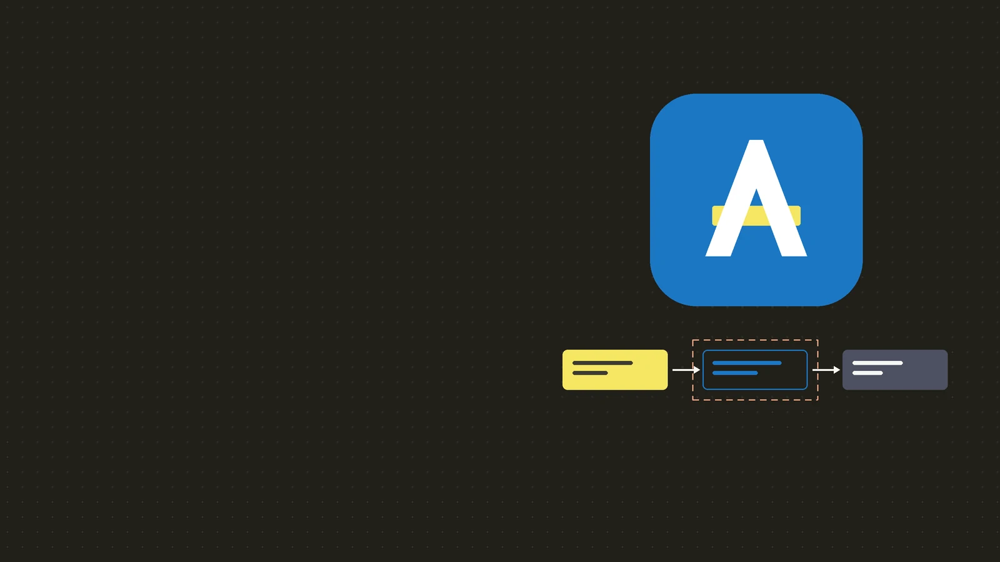

AIP Design System · v1.0.0
Clear rules.
Good defaults.
홈페이지 · Docs · MakeAIP · Playground · 아키텍처 그림이 함께 쓰는 하나의 기반.
logo-mark.svg · Λ + 형광펜 막대logo-lockup.svg · 밝은 면logo-lockup-inverse.svg · 어두운 면logo-mark-mono.svg · currentColorfavicon-16/32/48.png · favicon.svg · favicon.icoapp-icon-512.png · app-icon-maskable-512.png · apple-touch-icon-180.png01 — Color
Brand 5색은 재료, 화면은 시맨틱
위는 브랜드 원색, 아래는 OKLCH 로 파생한 램프 7종. 표는 dist/tokens.global.js 에서 그리므로 토큰과 어긋날 수 없다.
시맨틱 — 지금 테마의 값
02 — Typography
본문은 Pretendard, 코드와 식별자만 모노
03 — Scale
4px 그리드 · 작은 radius · 떠 있는 것만 그림자
space
radius
shadow · z-index
04 — Components
기본값이 정답인 컴포넌트
클래스 하나면 기본(secondary·md)이다. 다른 것이 필요할 때만 modifier 를 더한다.
Input · Textarea · Select · Checkbox · Radio · Switch · Segmented
Lowercase letters, numbers and dashes.
Use letters, numbers and dots only.
Tabs · Breadcrumb · Pagination
← → 키로 탭을 옮긴다. 선택이 곧 활성화다.
12 intents declared.
3 policies.
Tooltip · Dropdown · Dialog
Badge · Card · Callout · Empty · Status · Loading
Concept
Intent
What the caller needs, declared next to the code that uses it.
Guide
Write your first policy →
Clickable cards are links. Hover shows the only shadow a card gets.
Loading
No intents yet
Declare one to see it here, or start from a template.
05 — Documentation
문서 = 종이, 코드 = Slate
전체 조립은 docs.html 템플릿. 여기서는 부품만.
export const listMyOrders = intent({
read: "order",
read: "orders",
limit: 20, // highlighted line
});UI 안 인라인 코드 aip.intent/v1 · 단축키 ⌘K · 형광펜 highlight
client.run()
stablesince v0.2run(intent: Intent, input?: Input): Promise<Result>
intentIntentrequiredThe declared intent to run.
limitnumberoptionalMaximum rows.
Default:
20
Intent request
aip.intent/v1- name
- Stable identifier.
- actor
- Resolved by the server.
The Runtime MUST evaluate the policy first.
Run the intent as the signed-in user.
Result
200 · 3 rows
06 — Diagram
색은 개념, 모양은 종류, 선은 흐름
- frontendScreen
- intentlistMyOrders
- permissionowner = actor
- executionplan · run
- dataorders
<ol>.- Intent
- Runtime
- Execution
- Permission
- Frontend
- Backend
- Data
- External
- Note
- flow
- emphasis
- allow
- reject
SVG 아키텍처 그림은 docs.html Figure 1, Mermaid 는 dist/diagram.mermaid.json 의 classDef.